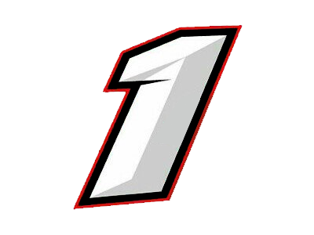

Guillermo Ortelli, piloto nacido en Salto (Argentina), es el segundo piloto con mayor cantidad de campeonatos de Turismo Carretera en la historia de la categoría. Sus apodos van desde "Guillote", "El Séptuple", "Rey Guillermo", haciendolo así el máximo ídolo de la hinchada de Chevrolet.

Sus títulos fueron los siguientes:
- 1998 - Chevrolet (Guillermo Ortelli Motor Sport)
- 2000 - Chevrolet (Guillermo Ortelli Motor Sport)
- 2001 - Chevrolet (Guillermo Ortelli Motor Sport)
- 2002 - Chevrolet (Guillermo Ortelli Motor Sport)
- 2008 - Chevrolet (Jp Carrera)
- 2011 - Chevrolet (Dole Racing)
- 2016 - Chevrolet (Jp Carrera)
